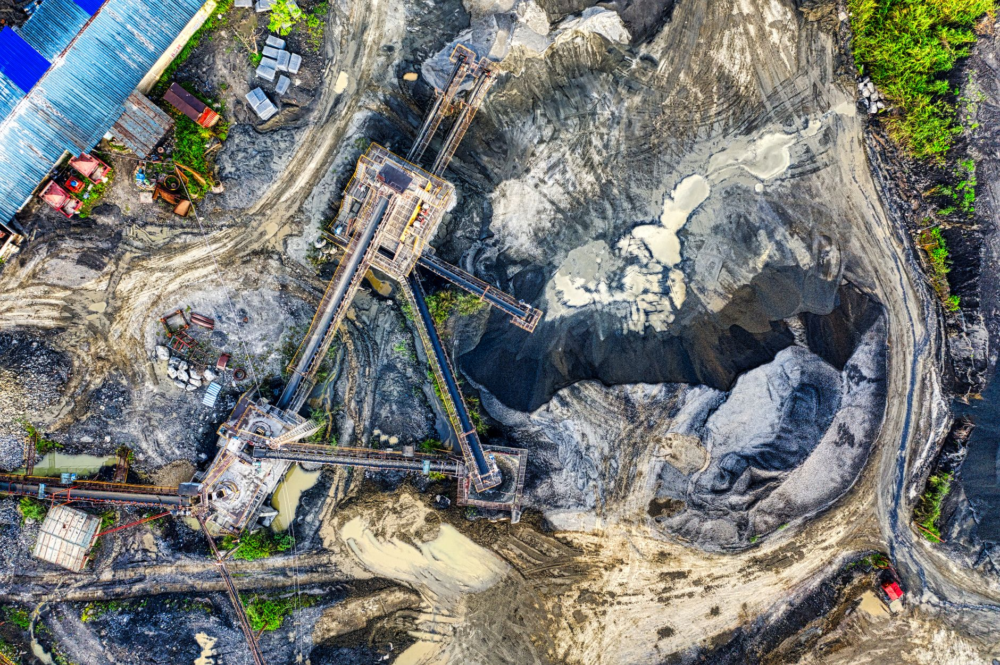

콩고 탄탈럼 광산 붕괴, 글로벌 공급망 비상

아프리카 콩고민주공화국의 루바야(Rubaya) 탄탈럼 광산이 대규모 붕괴 사고를 일으켜 최소 200명이 사망한 것으로 전해졌다. 루바야 광산은 전 세계 탄탈럼 생산량의 약 15%를 공급하는 핵심 산지로, 이번 사고가 글로벌 탄탈럼 공급망 전반에 심각한 충격을 줄 수 있다는 우려가 커지고 있다.
탄탈럼(Ta)은 스마트폰·노트북의 소형 커패시터(축전기), 반도체 공정용 타깃 재료, 항공기 엔진 부품 등에 광범위하게 사용되는 희귀금속이다. 내열성과 내부식성이 뛰어나 대체 소재 확보가 매우 까다로우며, 글로벌 공급의 60% 이상이 콩고민주공화국에 집중돼 공급망 취약성이 구조적으로 내재해 있다.
사고가 발생한 루바야 광산은 영세한 소규모 채굴(ASM, Artisanal and Small-scale Mining) 방식으로 운영되는 갱내 채굴 현장이다. 현지 당국에 따르면 집중 강우로 인한 지반 약화가 붕괴의 직접 원인으로 추정되며, 갱 내부에 다수의 광부가 고립된 상태다. 구조 작업이 이어지고 있지만 사망자 수는 더 늘어날 수 있다는 전망이 나온다.
이번 사고 직후 탄탈럼 스팟(현물) 가격은 kg당 약 160달러에서 185달러 수준으로 급등했다. 시장 전문가들은 루바야 광산의 생산 재개에 최소 6~12개월이 소요될 경우 연간 공급량 기준으로 약 350~400톤의 탄탈럼이 시장에서 사라지는 효과가 나타날 수 있다고 분석한다.
국내 영향도 주목된다. 삼성전자·삼성전기·SK하이닉스 등 국내 주요 반도체·전자 기업들은 탄탈럼 커패시터 및 반도체 공정 소재를 일부 콩고산 원료에 의존하고 있다. 공급 차질이 장기화될 경우 대체 공급처 확보 비용 증가와 소재 단가 상승이 불가피할 전망이다.
글로벌 전자업계는 이미 탄탈럼 공급 다변화를 추진해왔다. 호주·브라질·르완다 등이 대체 공급지로 부상하고 있으며, 특히 르완다는 분쟁광물 인증 시스템(ITSCI)을 갖춰 책임 있는 광물 공급망 구축에 앞서 있다. 그러나 이들 대체 산지의 생산 증설에는 상당한 시간이 필요해 단기 공급 부족은 불가피하다는 시각이 지배적이다.
공급망 투명성 전문가는 '루바야 광산 붕괴는 콩고 탄탈럼 공급망의 구조적 취약성을 다시 한번 여실히 드러낸 사건'이라며 '글로벌 기업들이 책임광물 조달 정책을 강화하고 공급처 다각화에 더욱 속도를 내야 한다는 압력이 커질 것'이라고 진단했다.
이번 사고는 탄탈럼 재활용 및 도시광산 수요를 자극하는 계기가 될 수도 있다. 현재 전 세계 탄탈럼 소비량의 약 20~25%가 스크랩 재활용을 통해 충당되고 있으며, 공급 충격이 지속될 경우 재활용 비율을 높이려는 기업들의 투자가 확대될 가능성이 있다.
미국과 유럽연합(EU)은 최근 분쟁광물 규제를 강화하는 방향으로 정책을 정비하고 있어, 이번 사고가 관련 입법 논의에도 영향을 미칠 전망이다. EU의 기업 공급망 실사 지침(CSDDD)은 탄탈럼 등 분쟁광물에 대한 공급망 추적 의무를 포함하고 있으며, 기업들의 준수 부담이 높아지고 있다.
국내 희귀금속 관련 종목에도 시장의 시선이 쏠리고 있다. 탄탈럼 관련 소재·재활용 사업을 영위하는 기업들의 주가가 사고 소식 이후 강세를 보이는 등 단기 투자 심리가 자극받는 모습이다. 다만 전문가들은 '실질적 공급 계약과 기술력을 갖춘 기업인지 면밀히 검토해야 한다'고 투자 주의를 당부한다.
향후 탄탈럼 시장은 공급 집중 리스크 해소를 위한 구조적 전환이 불가피할 전망이다. 대체 소재 기술 개발, 재활용 인프라 확충, 책임광물 인증 확대가 동시에 추진되어야 하며, 한국 정부와 기업들도 탄탈럼 비축 전략과 공급망 다변화 로드맵을 조속히 마련해야 한다는 목소리가 높아지고 있다.